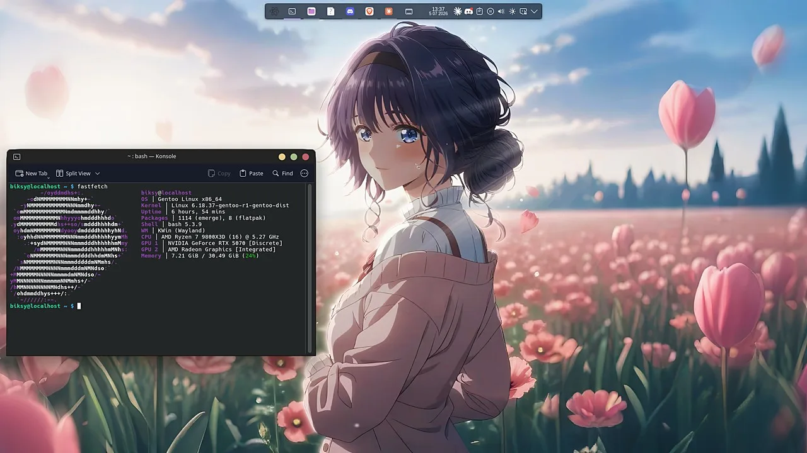

lukasz.aep
i compile my own OS and film it for tiktok. that's it, that's the site lol
About Me
Hey, I'm Lukasz — I like technology <3 on TikTok I'm @Lukasz.aep.
I run Gentoo Linux as my daily driver, I build most of my OS myself, it's slow when compiling but that's okay.
This site itself is a project with AI, it's supposed to be in a "Frutiger Aero" web look and the cozy "Wii Menu" vibe — glassy bubbles, glossy buttons, rounded channels, and a big rotating globe for the interactive site enjoyers.
- tiktok@Lukasz.aep
- githubBiksY01
- daily drivergentoo, obviously
My Gentoo Kernel
Built from source, on purpose WAW
No binary kernels here. I pull the sources straight from
/usr/src/linux, run make menuconfig, and hand-pick every
driver and subsystem my hardware actually needs — nothing more.
- Custom
.configtuned specifically for my CPU and devices - Stripped of modules and drivers I'll never touch (firewire LOL <3)
- Compiled with
-march=native -O2inmake.conf - OpenRC init for a lean, transparent boot
- Rebuilt on every major kernel bump
Why? uhhh
Faster boots, a smaller attack surface very opsec yes. Daily usage of the system helps me be better at linux in general, while I can enjoy the smooth and snappy feel of it all.
Gentoo isn't the easy path, speaking from experience xD

biksy@localhost ~ $ fastfetch OS Gentoo Linux x86_64 Kernel Linux 6.18.37-gentoo-r1-gentoo-dist WM KWin (Wayland) CPU AMD Ryzen 7 9800X3D (16) @ 5.27GHz GPU NVIDIA GeForce RTX 5070 [Discrete] Packages 1114 (emerge), 8 (flatpak) biksy@localhost ~ $ ▌
Projects
A few things I'm building
obsidian + ai
Obsidian vault, automated AI models and workflows.
home network
Two boxes talking over NFS, a minecraft server that's actually live now (scroll down), and a NAS + homemade router still on the list..
this site
This site and other business stuff lol. deploys itself when i hit save, real functions behind it and everything.
Obsidian + AI
how i keep a second brain the ai can actually read
one vault, both machines
everything i figure out lives in an obsidian vault that syncthing mirrors between the gentoo box and the server. the notes link to each other, so it's a little graph of how my setup actually fits together — not a folder of dead txt files.
the ai reads it too
same vault doubles as memory for my ai setup — it reads the notes on demand instead of me re-explaining my machines every single time. cheaper on tokens, and it stops forgetting stuff. every message i send gets quietly turned into a proper prompt first, very lazy of me <3
The Setup
how anything on this page actually reaches you
kde wayland · openrc
mc server + pushers
page right now
two boxes, one room
the gentoo machine is the daily driver (ssh closed, nobody gets in lol) and the
ubuntu one just sits there being reliable. they share folders over nfs,
syncthing mirrors the important stuff both ways, and when the minecraft server
needs an op command i just fire rcon.py at it from this side of the room.
the live widget, explained
a python script on the ubuntu box asks the jvm for its real heap numbers, strips anything personal (no ips, ever), and pushes a tiny snapshot to a cloudflare durable object. the page you're reading polls that copy — nothing on my lan is reachable from the internet. very opsec yes.
Minecraft Server
forge 1.20.1 running off the ubuntu box. this is it, live
the tunnel saga xD
no port forwarding here — players come in through a playit.gg tunnel. the tunnel
tags every connection with a proxy header, and for a while that header was crashing
every single login. the fix: a tiny python proxy that strips the header
before forge ever sees it. side effect, the server now thinks everyone connects
from 127.0.0.1, which is honestly very private of them.
the mods
create ecosystem plus a pile of performance mods so the tick times stay polite:
Now Playing
aero songs from tiktok, plus one station generated live in js
The Rice Corner
it's late down here. this is where the desktop customization lives
current rice
- kde plasma on wayland, breeze mixed with the Sweet theme
- colloid icons (purple, obviously) + bibata ice cursors
- animated wallpapers — wallpaper engine's linux port, plus xwinwrap for the stubborn stuff
- fastfetch tuned until the output looked right, then never touched again lol
the desk
three 1080p monitors, the middle one runs 280hz and the other two just try their best. most of the ricing energy goes into making all three feel like one coherent setup instead of three random screens xD
Find me on TikTok
@Lukasz.aep
Linux, Gentoo builds, kernel compiling, and whatever else ends up here it's all just slop anyways.
watch on tiktok